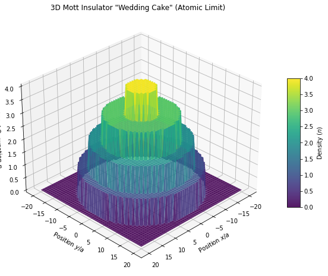

Just a guy
Physics, math, and music.
Selected Research
03 Projects · 2024–2026
01
2026
Quantum Optics · SLM · Rb MOT
Microtrap Arrays for Single-Atom Trapping
M.Sc. Thesis: Structured-light microtraps from spatial light modulators, Rb MOT and optical dipole trap.

02
2026
Many-Body Theory · Ultracold Atoms
The Hubbard Model in Ultracold Atoms
Term project: Mean-field study of the Hubbard model in a quadratic trap.
 1.png)
03
2024
Many-Body Physics · Green's Functions
Study of 2- and 3-Body Bound States
Term project: Bound states in Next-Nearest-Neighbour interaction-limited Hamiltonians using Green's equations of motion.